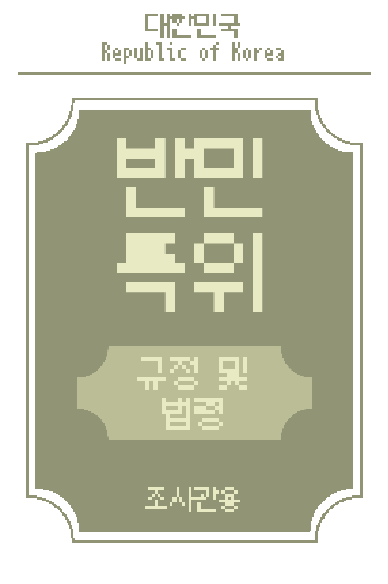

목차 기본 규정 조사실 정보 문서
규정 규정 1 테스트 규정 2 테스트 규정 3 테스트 규정 4 테스트 규정 5 테스트
조사실 정보
문서 문서 1 테스트 문서 2 테스트 문서 3 테스트 문서 4 테스트 문서 5 테스트
대한민국
반민특위 공식 공고
친애하는 조사관들에게
반민특위에서 반민족행위자에 대한
조사를 맡게된걸 환영하오.
분명히 조사가 만만치 않을테지만,
우리들은 동지들을 믿소.
같이 보낸 규정 및 법령을 참고해서,
대상을 조사하고, 확인 도장을 찍어
대상에게 돌려주시오.
만약 친일을 한 자라면,
체포 버튼을 눌러, 체포하시오.
다만, 체포가 힘들고 위급한 상황에
처해있다면, 사살하시오.
하지만, 명심하시오, 조사관.
절대 민간인을 사살해선 아니되오.
친일파 청산을 위하여,